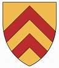

1502210 Earl Malise V of Strathearn
Greva av Strthearn, Greve av Orkney and Caithness. Blev högst 31 år.

Född:
1315 Strathearn, Pearthshire, Scotland. [1]
Död:
1346 Durham, England. [1]
Barn:
Personhistoria
1315
Födelse 1315 Strathearn, Pearthshire, Scotland
[1]
1346
Död 1346 Durham, England
[1]
Källor